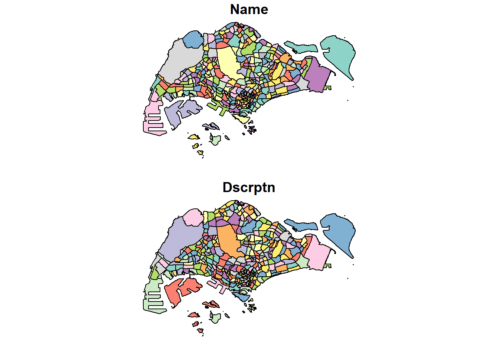
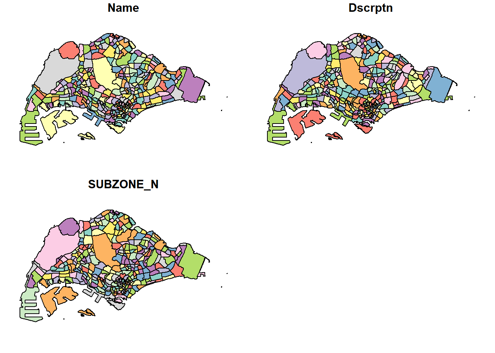
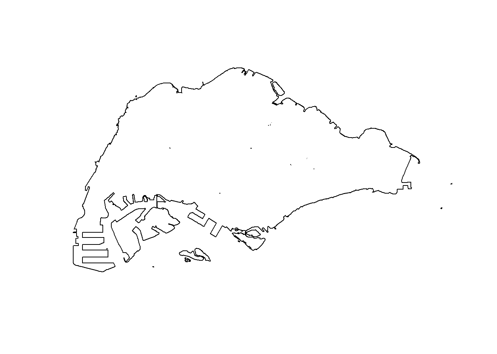

pacman::p_load(arrow, lubridate, tidyverse, tmap, sf,sp, dplyr,spatstat)Take-home Exercise 1: Application of Spatial Point Patterns Analysis – Geographical Distribution of Grab hailing services (Singapore)
Context
Introduction
Human mobility, the movement of people in space and time, reflects the spatial-temporal characteristics of human behaviour (Wang et al., 2021). With the advancement Information and Communication Technologies (ICT), pertinent through the ubiquitous use of smartphones, a large and growing volume of data relating to human mobility is available today. By using appropriate GIS analysis methods, such data are potentially useful in supporting smart-city planning and management.
Data
In 2020, an interesting human mobility data set called Grab Posisi was released by GRAB, one of the largest shared taxi operators in Southeast Asia. One of the two data sets released is focusing on Singapore only.
In Singapore, relevant human mobility data can be extracted from Land Transport Authority (LTA) DataMall. In particular, two data sets related to human mobility are provided by the portal: Passenger Volume by Origin Destination Train Stations and Passenger Volume by Origin Destination Bus Stops.
Limitation
A limitation of the LTA data sets is that their location is biased to either bus stops or MRT/LRT stations.
Importing Packages
The following R packages are used for this assignment:
arrow, to read and write Parquet files (format in which data is in)
lubridate, to work with time-related data more easily
tidyverse, for importing, wrangling and visualising data
tmap, to create thematic maps
sf, for importing, managing and processing geospatial data
Data
Geospatial Data
Data preprocessing
****Master Plan 2019 Subzone Boundary*** First, we want to get a clear Singapore boundary layer.
Extracted from data.gov.sg, let’s read the 2019 master plan subzone boundary layer and convert the CRS to EPSG3414.
mpsz <- st_read("data/geospatial/master-plan-2019-subzone-boundary-no-sea-kml.kml")Reading layer `URA_MP19_SUBZONE_NO_SEA_PL' from data source
`C:\guacodemoleh\IS415-GAA\Take-home_Ex\Take-home_Ex01\data\geospatial\master-plan-2019-subzone-boundary-no-sea-kml.kml'
using driver `KML'
Simple feature collection with 332 features and 2 fields
Geometry type: MULTIPOLYGON
Dimension: XY, XYZ
Bounding box: xmin: 103.6057 ymin: 1.158699 xmax: 104.0885 ymax: 1.470775
z_range: zmin: 0 zmax: 0
Geodetic CRS: WGS 84summary(mpsz) Name Description geometry
Length:332 Length:332 MULTIPOLYGON : 11
Class :character Class :character MULTIPOLYGON Z:321
Mode :character Mode :character epsg:4326 : 0
+proj=long... : 0 - The dimension contains XYZ, meaning that
mpszcontains 3D geometries
Convert mpsz to 2D geometry using st_zm() and save the converted form as a shapefile.
mpsz <- st_zm(mpsz, drop = TRUE) # Convert 3D geometries to 2DThen transform the CRS from WGS84 to SVY21.
mpsz3414 <- st_transform(mpsz_sf, 3414)
plot(mpsz3414)
Currently, there is no subzone column and the subzone name information is embedded in the Dscrptn column, so create a new column SUBZONE_N containing the subzone names.
# create a new column 'SUBZONE_N' and extract subzone names from 'Dscrptn' field
mpsz3414 <- mpsz3414 %>%
rowwise() %>%
mutate(SUBZONE_N = str_extract(Dscrptn, "<th>SUBZONE_N</th> <td>(.*?)</td>")) %>%
ungroup()
# remove HTML tags and 'SUBZONE_N' from 'SUBZONE_N' column
mpsz3414$SUBZONE_N <- str_remove_all(mpsz3414$SUBZONE_N, "<.*?>|SUBZONE_N")
# view the updated 'mpsz3414' dataframe
mpsz3414Simple feature collection with 332 features and 3 fields
Geometry type: MULTIPOLYGON
Dimension: XY
Bounding box: xmin: 2667.538 ymin: 15748.72 xmax: 56396.44 ymax: 50256.33
Projected CRS: SVY21 / Singapore TM
# A tibble: 332 × 4
Name Dscrptn geometry SUBZONE_N
* <chr> <chr> <MULTIPOLYGON [m]> <chr>
1 kml_1 "<center><table><tr><th colspan='… (((33222.98 29588.13, 33… " MARINA…
2 kml_2 "<center><table><tr><th colspan='… (((28481.45 30886.22, 28… " INSTIT…
3 kml_3 "<center><table><tr><th colspan='… (((28087.34 30541, 28087… " ROBERT…
4 kml_4 "<center><table><tr><th colspan='… (((14557.7 30447.21, 145… " JURONG…
5 kml_5 "<center><table><tr><th colspan='… (((29542.53 31041.2, 295… " FORT C…
6 kml_6 "<center><table><tr><th colspan='… (((35279.55 30886.05, 35… " MARINA…
7 kml_7 "<center><table><tr><th colspan='… (((15772.59 21767.8, 158… " SUDONG"
8 kml_8 "<center><table><tr><th colspan='… (((19843.41 21752.42, 19… " SEMAKA…
9 kml_9 "<center><table><tr><th colspan='… (((30870.53 22605.92, 30… " SOUTHE…
10 kml_10 "<center><table><tr><th colspan='… (((26879.04 26671.35, 26… " SENTOS…
# ℹ 322 more rowsNo commercial ride hailing services are available in the outer islands of Singapore. Let’s identify them first.

Filter the outer islands.
outer_islands <- c("SEMAKAU", "SUDONG", "NORTH-EASTERN ISLANDS", "SOUTHERN GROUP")
# Remove rows where 'SUBZONE_N' is in the list
mpsz3414 <- mpsz3414 %>%
filter(!str_trim(SUBZONE_N) %in% str_trim(outer_islands))
plot(mpsz3414)
Then dissolve all the inner subzone boundaries using st_union() (if necessary).
sg_sf <- mpsz3414 %>% st_union()
plot(sg_sf)
Dissolve all the inner subzone boundaries using st_union().
sg_sf <- mpsz3414 %>% st_union()OSM Singapore Roads
Read the Singapore Roads layer imported from OSM and convert it to the correct CRS.
roads3414 <- st_read(dsn= "data/geospatial", layer="gis_osm_roads_free_1") %>%
st_transform(crs=3414)Reading layer `gis_osm_roads_free_1' from data source
`C:\guacodemoleh\IS415-GAA\Take-home_Ex\Take-home_Ex01\data\geospatial'
using driver `ESRI Shapefile'
Simple feature collection with 1759836 features and 0 fields
Geometry type: LINESTRING
Dimension: XY
Bounding box: xmin: 99.66041 ymin: 0.8021131 xmax: 119.2601 ymax: 7.514393
Geodetic CRS: WGS 84Verify that roads3414 are in the correct in CRS
summary(roads3414) geometry
LINESTRING :1759836
epsg:3414 : 0
+proj=tmer...: 0 Data Size Management
Before further data manipulation, save the files in rds format as the size of roads3414 is very large.
write_rds(roads3414,"data/geospatial/rds/roads3414.rds")
roads3414 <- read_rds("data/geospatial/rds/roads3414.rds")Aspatial Data
Data preprocessing
Read all the Grab-Posisi using arrow’s read_parquet() function to read the parquet files containing the ride trajectories.
df0 <- read_parquet("data/aspatial/part-00000-8bbff892-97d2-4011-9961-703e38972569.c000.snappy.parquet")
df1 <- read_parquet("data/aspatial/part-00001-8bbff892-97d2-4011-9961-703e38972569.c000.snappy.parquet")
df2 <- read_parquet("data/aspatial/part-00002-8bbff892-97d2-4011-9961-703e38972569.c000.snappy.parquet")
df3 <- read_parquet("data/aspatial/part-00003-8bbff892-97d2-4011-9961-703e38972569.c000.snappy.parquet")
df4 <- read_parquet("data/aspatial/part-00004-8bbff892-97d2-4011-9961-703e38972569.c000.snappy.parquet")
df5 <- read_parquet("data/aspatial/part-00005-8bbff892-97d2-4011-9961-703e38972569.c000.snappy.parquet")
df6 <- read_parquet("data/aspatial/part-00006-8bbff892-97d2-4011-9961-703e38972569.c000.snappy.parquet")
df7 <- read_parquet("data/aspatial/part-00007-8bbff892-97d2-4011-9961-703e38972569.c000.snappy.parquet")
df8 <- read_parquet("data/aspatial/part-00008-8bbff892-97d2-4011-9961-703e38972569.c000.snappy.parquet")
df9 <- read_parquet("data/aspatial/part-00009-8bbff892-97d2-4011-9961-703e38972569.c000.snappy.parquet")Then combine the rows using the bindrows function in the dplyr package embedded in the tidyverse package.
df <- bind_rows(df0, df1, df2, df3, df4, df5, df6, df7, df8, df9)
head(df)# A tibble: 6 × 9
trj_id driving_mode osname pingtimestamp rawlat rawlng speed bearing accuracy
<chr> <chr> <chr> <int> <dbl> <dbl> <dbl> <int> <dbl>
1 70014 car android 1554943236 1.34 104. 18.9 248 3.9
2 73573 car android 1555582623 1.32 104. 17.7 44 4
3 75567 car android 1555141026 1.33 104. 14.0 34 3.9
4 1410 car android 1555731693 1.26 104. 13.0 181 4
5 4354 car android 1555584497 1.28 104. 14.8 93 3.9
6 32630 car android 1555395258 1.30 104. 23.2 73 3.9The observed pingtimestamp is not easily comprehensible, thus it needs to be amended to a proper timestamp.
df$pingtimestamp <- as_datetime(df$pingtimestamp) ## $ to overwrite the variable in df
head(df$pingtimestamp)[1] "2019-04-11 00:40:36 UTC" "2019-04-18 10:17:03 UTC"
[3] "2019-04-13 07:37:06 UTC" "2019-04-20 03:41:33 UTC"
[5] "2019-04-18 10:48:17 UTC" "2019-04-16 06:14:18 UTC"The data can be further segmented to two groups: - origin_df representing the starting locations of trips taken - dest_df representing the end locations of trips taken
Further Observation
Starting Locations
origin_df <- df %>%
group_by(trj_id) %>%
arrange(pingtimestamp) %>%
filter(row_number()==1) %>%
mutate(weekday = wday(pingtimestamp,
label=TRUE,
abbr=TRUE),
start_hr = factor(hour(pingtimestamp)),
day = factor(mday(pingtimestamp)))End Locations
dest_df <- df %>%
group_by(trj_id) %>%
arrange(desc(pingtimestamp)) %>%
filter(row_number()==1) %>%
mutate(weekday = wday(pingtimestamp,
label=TRUE,
abbr=TRUE),
end_hr = factor(hour(pingtimestamp)),
day = factor(mday(pingtimestamp)))Data Size Management
Before further data manipulation, save the files in rds format as the size of df is very large. Running the whole tibble dataframe will not be practical and processing time will be very long.
write_rds(origin_df,"data/aspatial/rds/origin_df.rds")
origin_df <- read_rds("data/aspatial/rds/origin_df.rds")
write_rds(dest_df,"data/aspatial/rds/dest_df.rds")
dest_df <- read_rds("data/aspatial/rds/dest_df.rds")